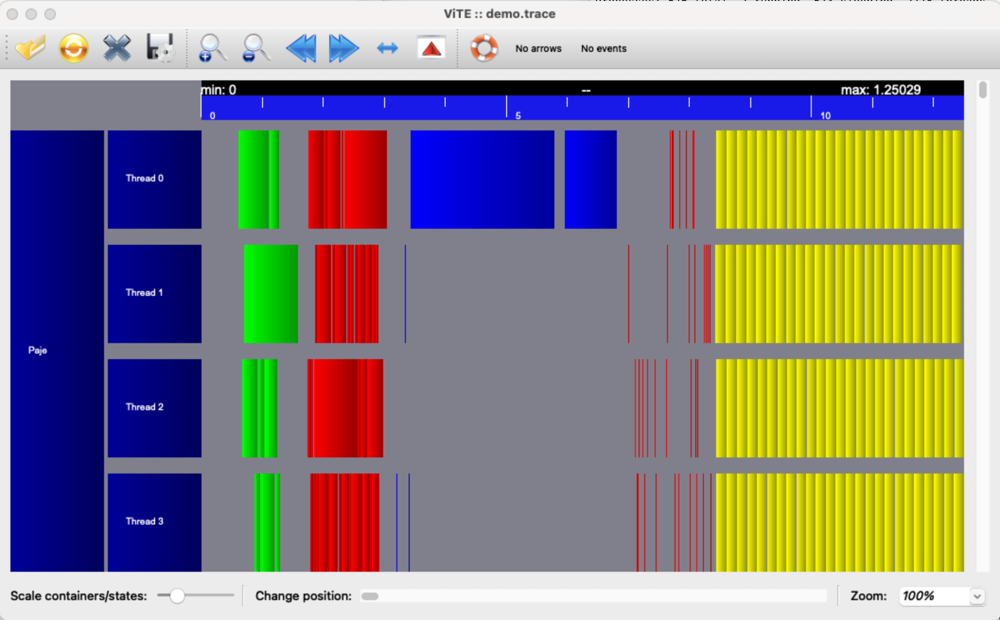

12. Parallelization#
In a sequential program one CPU executes one instruction after the other. To speed up computations, one can combine several CPUs in a parallel program. Here, CPU means a compute unit, what is typically one core within a microprocessor.
There are many possibilities to arange the hardware:
Shared memory parallelization: All CPUs have access to the same memory. Data structures are automatically shared between them. Nowadays, most Laptops and PCs have microprocessors with several cores. It is relatively easy to write shared memory parallel programs. However, it is expensive to build shared memory parallel systems with many (say 20 or more) CPUs.
Distributed memory parallelization: Every CPU has its own memory, CPUs are conncected with a network. For communication, one has to send explicitely data between the CPUs. The standard library for this is MPI-message passing interface. The world’s most powerful parallel computers are listed in the Top 500 list, Austria’s largest parallel computers belong to the family of VSC - Vienna Scientific Cluster systems.
Accelerators: Are specialized compute unites for heavy (for example linear algebra) computations. While in typical CPUs most transistors are dedicated to program workflow, in so called GPUs (graphics processing units) most parts of the chip are used for computing. Nowadays most popular are CUDA systems, which are programmed using a few extensions to C/C++.
In this lecture we discuss only shared memory programming. Well established environments are OpenMP and Intel TBB. Taskflow is a light-weight open source solution. However, with new features in modern C++, a do-it-yourself approach is also possible.
12.1. Using our own task manager#
We build a simple task scheduler on top of a concurrent queue available as open source. It is implemented within the ASC-HPC package in src/taskmanager.[h|cc], and demos are in demos/demo_tasks.cc.
StartWorkers(3);
RunParallel(10, [] (int i, int size) {
cout << "I am task " << i << " out of " << size << endl;
});
StopWorkers();
With StartWorkers and StopWorkers we start and stop additional threads. These new threads support the main thread executing tasks, so in total we have 4 threads in this example.
The RunParallel function triggers the execution of tasks. The task is given by a function object,
for example implemented as lambda-function (as in our example). We specify how many tasks we create.
In this example the function will be called with arguments \((i, size)\) = \((0,10), \ldots, (9,10)\). The RunParallel function returns when all of its tasks are completed.
We can create tasks also recursively, a task can create more tasks:
RunParallel(6, [] (int i, int s) {
RunParallel(6, [i] (int j, int s2) {
std::stringstream str;
str << "nested, i,j = " << i << "," << j << "\n";
cout << str.str();
});
});
A possible use-case is to split a matrix-matrix multiplication into tasks. Task \(i\) computes rows \([\frac{i \, n}{size}, \frac{(i+1)\, n}{size})\).
int n = 1000;
Matrix<> a(n,n), b(n,n), c(n,n);
a = 1; b = 2;
RunParallel(12, [n, &a, &b,&c] (int i, int size) {
size_t first = (i*n) / size;
size_t next = ((i+1)*n) / size;
c.Rows(first, next) = a.Rows(first, next) * b; });
Variables from outside are passed to the lambda-function within brackets [n, &a], either by value, or by reference. That’s called the closure of
the lambda function.
12.2. Trace profiling with vite#
The ASC-HPC package comes with high precision timers, which are recording start and stop events. These events are later dumped into a trace-file, which can be visualized with the open source Vite Trace Explorer. Horizontally we have time (values are given in milliseconds). We have 4 rows corresponding to 4 threads. The colored rectangles correspond to tasks, executed by some thread, within some interval in time:
{kind=link}
Vite can be installed on Linux by the package manager, compiled vite executables for Windows and MacOS are available from https://www.asc.tuwien.ac.at/~mhochsteger/files/vite/.
12.3. C++ types for parallel computing#
Try the following (always between StartWorkers/StopWorkers):
int cnt = 0;
RunParallel(1000, [&cnt] (int i, int size) { cnt++; });
cout << "cnt = " << cnt << endl;
I get varying output, something similar to cnt = 962. What goes wrong ?
Thread A reads the value of cnt, increments it, and stores the value back to memory.
If thread B reads cnt between load and store of thread A, and stores after thread A is storing,
it overwrites A’s result, one count is lost. If the result depends unpredictable on the progress
of the different threads we generated a so called race condition.
The solution is to make load-increment-store an atomic operation, what is provided in modern C++
by the std::atomic class template:
std::atomic<int> cnt = 0;
RunParallel(1000, [&cnt] (int i, int size) { cnt++; });
cout << "cnt = " << cnt << endl;
Now the output is always 1000, as in a sequential program. Simple
atomic operations are provided by the hardware. An atomic add is an
assembly instruction, it performs the load-increment-store
operations by one instruction, the memory location is locked until the
whole operations is complete. This is called an atomic add
operation. The amazing potential of atomic variables is explained in
two amazing talks by Herb Sutter atmoic<>
Weapons.
In our first example, the output gets screwed up. One thread starts printing, and an other continues, in
unpredictable manner. A solution is to use locks:
std::mutex mut;
RunParallel(10, [&mut] (int i, int size) {
std::lock_guard<std::mutex> lock(mut);
cout << "I am task " << i << " out of " << size << endl;
});
In the constructor, a lock claims ownership of a mutex. If one thread got it, all other threads have to wait until ownership is released. This is done in the destructor of the lock.
An alternative to the atomic add would be a regular add, protected by locking a mutex.
Excercise: Discuss how you could implement such a lock yourself.
12.4. Implementation of the task scheduler#
Having a parallel queue available, it is easy to write a task scheduler on top of it.
A task is defined by a function (a std::function object), and the instance
of the function it is (nr out of size). The atomic counter cnt counts the completions of tasks
within one job. When we call RunParallel (num, ...), num instances of tasks are put into
the parallel queue:
class Task {
public:
int nr, size;
const std::function<void(int nr, int size)> * pfunc;
std::atomic<int> * cnt;
};
moodycamel::ConcurrentQueue<Task> queue;
The creation of worker threads is done like this. With std::thread
we create a new thread running in parallel to the calling thread. If
more CPUs are available, the new thread is picked up by another CPU.
If no additional CPU is available, one CPU has to switch between
multiple threads, what is expensive. The new thread enters an endless
loop, which is quit when the stop flag is set. In the loop we check
if the queue holds some work to do. If so, we remove it from the
queue, and call the function of the task, with arguments specified by
the task. On return, we increment the completion counter.
std::atomic<bool> stop{false};
void StartWorkers(int num)
{
stop = false;
for (int i = 0; i < num; i++)
{
threads.push_back (std::thread([]()
{
while(true)
{
if (stop) break;
Task task;
if(!queue.try_dequeue(task))
continue;
(*task.pfunc)(task.nr, task.size);
(*task.cnt)++;
}
}));
}
}
When calling RunParallel, we create tasks objects, and feed them into the queue.
The creating thread works on tasks stored in the queue as well. It returns as soon as the completion counter
cnt reaches the number of created tasks.
void RunParallel (int num,
const std::function<void(int nr, int size)> & func)
{
std::atomic<int> cnt{0};
for (size_t i = 0; i < num; i++)
{
Task task;
task.nr = i;
task.size = num;
task.pfunc = &func;
task.cnt = &cnt;
queue.enqueue(task);
}
while (cnt < num)
{
Task task;
if(!queue.try_dequeue(task))
continue;
(*task.pfunc)(task.nr, task.size);
(*task.cnt)++;
}
}
12.5. Lock free algorithms based on CAS#
It is easy to implement data structures like linked lists in a sequential program. Here we give the code for a list which allows to push and pop data at the same end (called a stack):
class Node
{
int data; // whatever we put into the list
Node* next; // next node
};
class List
{
private:
Node* head;
public:
List() : head(nullptr) { }
void add(Node* node)
{
node->next = head;
head = node;
}
Node* try_get()
{
Node* currenthead = head;
if (head)
head = head->next;
return currenthead;
}
};
Now, let’s assume we have several parallel threads which push to and
pop from the same list. Assume thread A and thread B call the add
function approximately at the same time. Both read the current value
of head, and assign it as next to the new element. Then thread A
sets the head to its newly inserted node, and then thread B does
the same. As a result, A’s new node is lost. A possible solution is
to put a lock into the add and try_get functions. Then only one
thread at a time can modify the list. When it releases the lock, the
list is in a well-defined state.
However, locks have some price. If many threads access the list, most of them might end up waiting for the lock. The worst case is when some thread claims the lock, and this thread gets scheduled away by the operating system (for several milliseconds). All other thraeds waiting to enter the lock-protected region are blocked.
The goal is to rewrite the
two instructions modifying the list as a single atomic operation. This
can be done with an atomic compare and swap (CAS) operation, which is
provided as member function of the C++ atomic type:
bool atomic<T>::compare_exchange_strong (T& expected, T desired);
If the value of the atomic value is equal to
expected, the atomic variable is replace bydesired, and the function returns true.otherwise,
expectedis replace by the value of the atomic.
class Node
{
int data; // whatever we put into the list
std::atomic<Node*> next; // next node
};
class List
{
private:
std::atomic<Node*> head;
public:
List() : head(nullptr) { }
void add(Node* node)
{
Node * currenthead = head;
do {
node->next = currenthead;
} while (!head.compare_exchange_strong(currenthead, node));
}
Node* try_get()
{
Node * currenthead = head;
while (currenthead && !head.compare_exchange_strong(currenthead, currenthead->next))
continue;
return head;
}
};
However, there is an issue known as ABA problem. The problem as well as two smart solutions are described here: lock-free list. The author, Cameron Desrochers, is the developer of the concurrent queue we are using.
Exercises:
Implement a lock (similar to
std::lock_guard) using the CAS - operation.Use RunParallel to parallelize your Matrix-Matrix multiplication. How well does is scale ? For what number of threads, and for which sizes of the matrix ? Use vite-tracer for your experiments